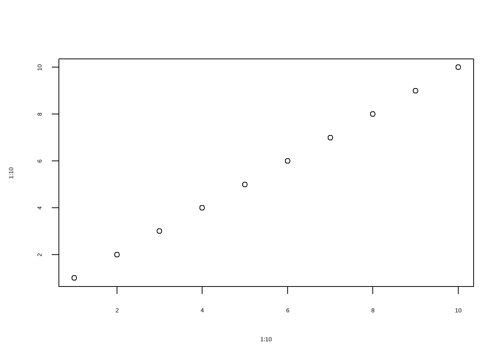
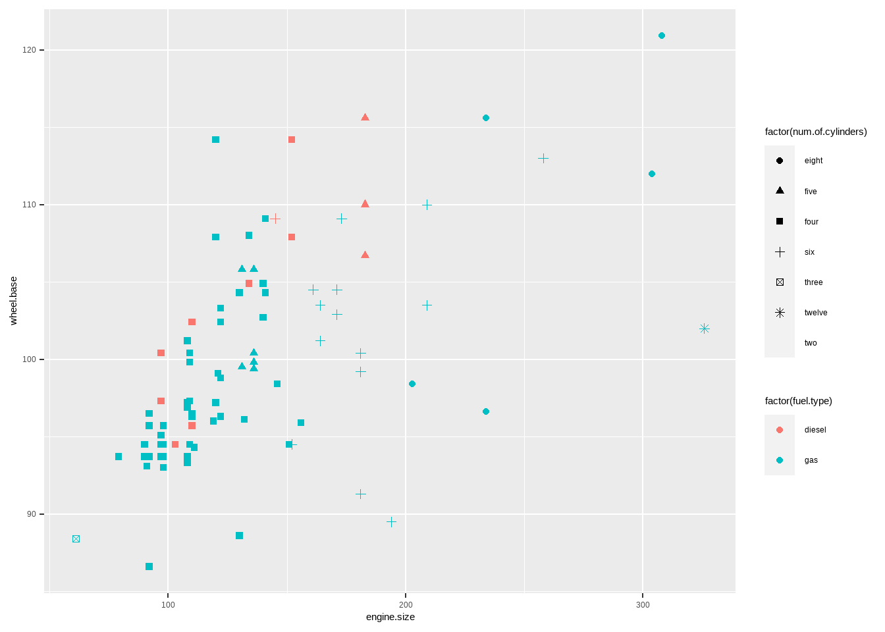

Simple Data Visualization
Make great data visualizations. A great way to see the power of coding!

Mohammad Hossein Malekpour
Mohammad Hossein Malekpour
Instructions:
Seaborn is a Python data visualization library based on matplotlib. It provides a high-level interface for drawing attractive and informative statistical graphics.
Since it’s not always easy to decide how to best tell the story behind your data, we’ve broken the chart types into three broad categories to help with this.
- Trends: A trend is defined as a pattern of change.
sns.lineplot
- Relationship: Understand relationships between variables in your data.
sns.barplotsns.heatmapsns.scatterplotsns.regplotsns.lmplotsns.swarmplot
- Distribution: We visualize distributions to show the possible values that we can expect to see in a variable, along with how likely they are.
sns.histplotsns.kdeplotsns.jointplot
Seaborn is a Python data visualization library based on matplotlib. It provides a high-level interface for drawing attractive and informative statistical graphics.
Since it’s not always easy to decide how to best tell the story behind your data, we’ve broken the chart types into three broad categories to help with this.
- Trends: A trend is defined as a pattern of change.
sns.lineplot
- Relationship: Understand relationships between variables in your data.
sns.barplotsns.heatmapsns.scatterplotsns.regplotsns.lmplotsns.swarmplot
- Distribution: We visualize distributions to show the possible values that we can expect to see in a variable, along with how likely they are.
sns.histplotsns.kdeplotsns.jointplot
Codes:
asdf# There are a few lines of code that you'll need to run at the top of every notebook to set up your coding environment.
import pandas as pd
pd.plotting.register_matplotlib_converters()
import matplotlib.pyplot as plt
import seaborn as sns
# Path of the file to read
auto_filepath = "data/Automobile_data.csv"
# Read the file into a variable Automobile_data.csv
# The dataset consist of data From 1985 Ward's Automotive Yearbook.
auto = pd.read_csv(auto_filepath)
# Print the five random rows of the data
auto.sample(5)Results:

## symboling normalized-losses make ... city-mpg highway-mpg price
## 41 0 85 honda ... 24 28 12945
## 83 3 ? mitsubishi ... 19 24 14869
## 177 -1 65 toyota ... 27 32 11248
## 78 2 161 mitsubishi ... 31 38 6669
## 134 3 150 saab ... 21 28 15040
##
## [5 rows x 26 columns]Instructions:
sns.lineplot - Line charts are best to show trends over a period of time, and multiple lines can be used to show trends in more than one group. The relationship between x and y can be shown for different subsets of the data using the hue, size, and style parameters. Check the documentation for more details.
sns.lineplot - Line charts are best to show trends over a period of time, and multiple lines can be used to show trends in more than one group. The relationship between x and y can be shown for different subsets of the data using the hue, size, and style parameters. Check the documentation for more details.
Codes:
# Group variable using "hue" that will produce lines with different colors
sns.lineplot(data=auto, x="wheel-base", y="engine-size", hue="fuel-type")Results:

Instructions:
sns.barplot - Bar charts are useful for comparing quantities corresponding to different groups. Show point estimates and confidence intervals as rectangular bars. Check the documentation for more details.
sns.barplot - Bar charts are useful for comparing quantities corresponding to different groups. Show point estimates and confidence intervals as rectangular bars. Check the documentation for more details.
Codes:
# Draw a set of vertical bars with nested grouping by a two variables
sns.barplot(x=auto['body-style'], y=auto['city-mpg'], hue=auto['fuel-type'])Results:

Instructions:
sns.heatmap - Heatmaps can be used to find color-coded patterns in tables of numbers. A heat map is a data visualization technique that shows magnitude of a phenomenon as color in two dimensions. The variation in color may be by hue or intensity, giving obvious visual cues to the reader about how the phenomenon is clustered or varies over space. Check the documentation for more details.
sns.heatmap - Heatmaps can be used to find color-coded patterns in tables of numbers. A heat map is a data visualization technique that shows magnitude of a phenomenon as color in two dimensions. The variation in color may be by hue or intensity, giving obvious visual cues to the reader about how the phenomenon is clustered or varies over space. Check the documentation for more details.
Codes:
# Compute pairwise correlation of columns, excluding NA/null values.
corr = auto.corr()
# annot: Annotate each cell with the numeric value
# linewidths: Add lines between each cell
sns.heatmap(corr, annot=True, linewidths=.1)Results:
Instructions:
sns.scatterplot - Scatter plots show the relationship between two continuous variables; if color-coded, we can also show the relationship with a third categorical variable. The relationship between x and y can be shown for different subsets of the data using the hue, size, and style parameters. These parameters control what visual semantics are used to identify the different subsets. Check the documentation for more details.
sns.scatterplot - Scatter plots show the relationship between two continuous variables; if color-coded, we can also show the relationship with a third categorical variable. The relationship between x and y can be shown for different subsets of the data using the hue, size, and style parameters. These parameters control what visual semantics are used to identify the different subsets. Check the documentation for more details.
Codes:
# Showing two different grouping variables using "hue" amd "style" parameter
sns.scatterplot(data=auto, x='engine-size', y='wheel-base', hue='fuel-type',style='num-of-cylinders')Results:

Instructions:
sns.distplot - Histograms Plot univariate or bivariate histograms to show distributions of datasets. A histogram is a classic visualization tool that represents the distribution of one or more variables by counting the number of observations that fall within disrete bins.
This function can normalize the statistic computed within each bin to estimate frequency, density or probability mass, and it can add a smooth curve obtained using a kernel density estimate, similar to kdeplot(). Check the documentation for more details.
sns.distplot - Histograms Plot univariate or bivariate histograms to show distributions of datasets. A histogram is a classic visualization tool that represents the distribution of one or more variables by counting the number of observations that fall within disrete bins.
This function can normalize the statistic computed within each bin to estimate frequency, density or probability mass, and it can add a smooth curve obtained using a kernel density estimate, similar to kdeplot(). Check the documentation for more details.
Codes:
# kde:If True, smooth the distribution and show as line
sns.histplot(data=auto, x="city-mpg", kde=True)Results: